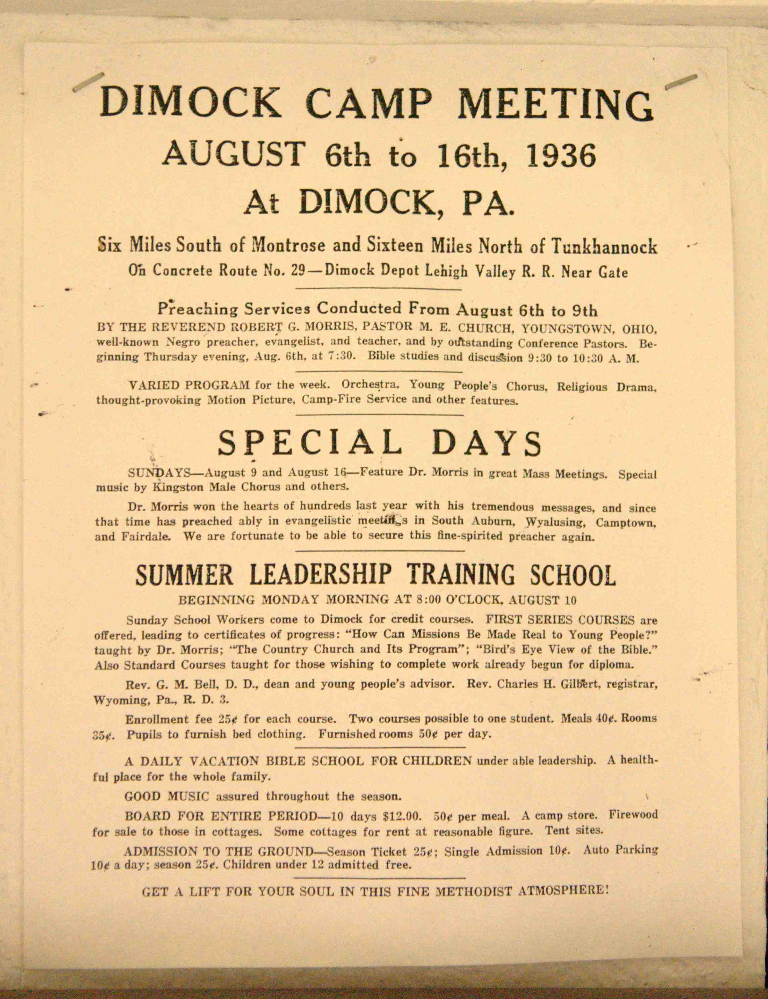

The tradition
What is a Camp Meeting?
In the late 1700s, a tradition was begun in America in which individuals eager to spread their Christian faith gathered in revival-styled services for days on end, first camping out under the stars, later in tents, and eventually in wooden cottages all surrounding an open-air sanctuary. Originally, the Baptists, Presbyterians and Methodists were a part of the mix, but it was the Methodist Episcopal Church that saw camp meetings as an integral part of helping people renew their faith commitments while sharing fellowship with like-minded individuals in their region.
By 1810, Methodist Bishop Francis Asbury noted in his journal that it was his hope that at least 600 camp meetings could be held annually throughout the young United States. In 1807, the first known camp meeting in this area occurred about 30 miles northwest of Dimock, near present-day Smithboro, New York. It went on for four days and Asbury was in attendance during the last two.

By the 1870s, plans were underway to install permanent camp meeting grounds in each of the regional districts within the Methodist Episcopal Church's annual conferences. The Dimock grounds were to serve the Wyalusing District, then one of seven districts in the Methodist Episcopal Church's Wyoming Conference. The Wyalusing District was dissolved in 1879, but camp meetings continued.
